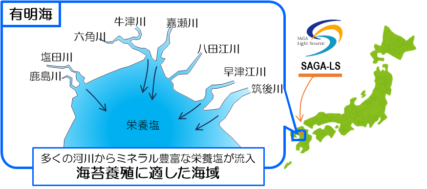
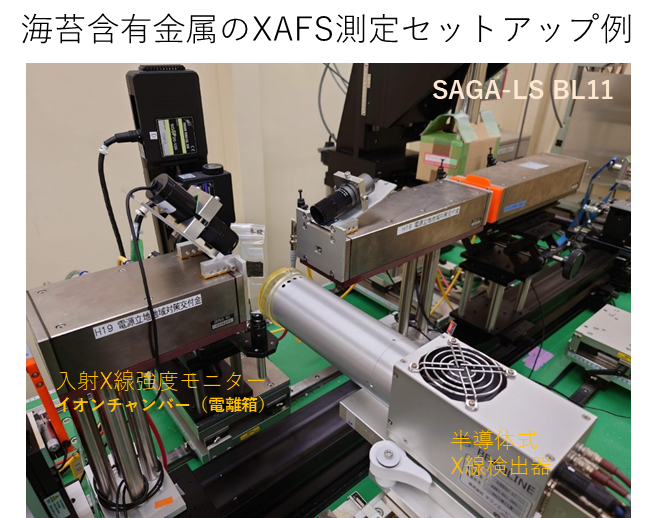
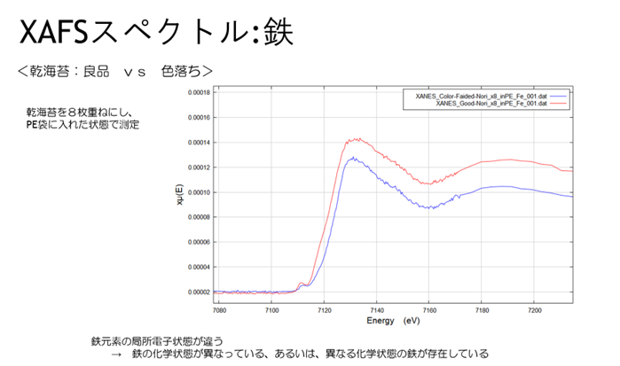
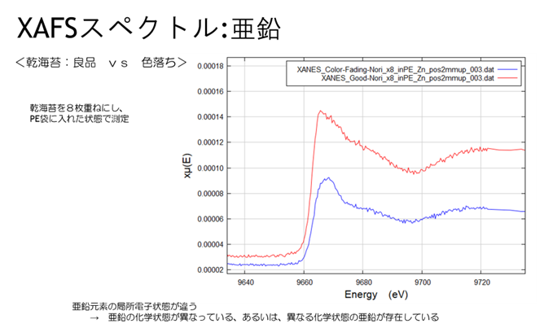

海苔の品質と含有元素の関係を調べる
有明海産海苔を対象に、鉄（Fe）や亜鉛（Zn）のXANESスペクトルを比較した測定事例です。
研究背景
海苔の品質と含有元素の関係を調べるため、品質の異なる海苔を比較しました。


測定方法
BL11のXAFS測定装置を用いた測定事例です。入射X線強度を電離箱でモニターし、 半導体式X線検出器を用いて蛍光X線を検出します。

測定結果：鉄（Fe）

品質の異なる海苔で信号強度に違いが見られます。
測定結果：亜鉛（Zn）

Znについても信号強度に違いが見られます。ただし、強度差のみから含有量や 化学状態の違いを断定することはできません。
食品・農水産物への応用
XAFSは、食品や農水産物に含まれる特定元素の化学状態を調べる手法の一つです。 測定の可否は対象元素、濃度、試料形態などに応じて検討します。